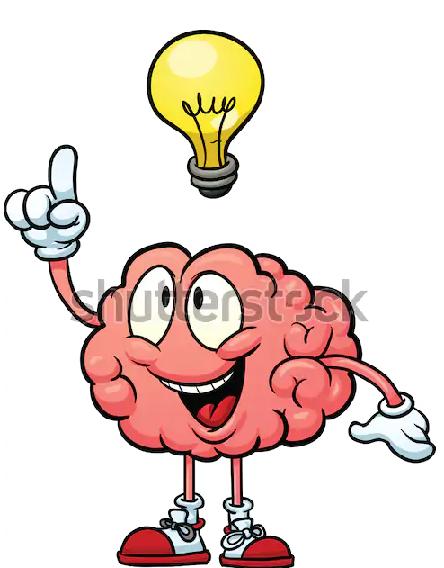

Introdução
Olá! Você recentemente tomou interesse pelo ofício das artes? Ou talvez está retornando a essa atividade após muito tempo sem prática? Qualquer que seja o caso, se seu interesse é a arte de desenhar, veio ao lugar certo. Nesse site, abordaremos técnicas e dicas relacionadas a essa arte, para dar um impulso àqueles que estão apenas iniciando, e até mesmo relembrar aos mais veteranos coisas das quais podem ter se esquecido ao longo da jornada; Venha conosco estimular seu instinto criativo!
Inicio
Logo de início é importante ressaltar que o aprendizado dessa arte não é simples; serão necessários muito esforço, dedicação e perseverança; É uma habilidade que levará bastante tempo para ser aprendida, e esse processo envolverá muitas falhas antes que se obtenha um resultado satisfatório. Tendo isso em mente, saiba que essa prática também possui lados positivos, tais como:
- A melhora de sua criatividade;
- Aguça a mente e desenvolve a memoria;
- Pode ajuda-lo a melhorar suas habilidades comunicativas;
- Pode ser utilizado como um hobby, para assim gerar diversão, o que indiretamente ajudará no aumento da positividade, do relaxamento e na melhoria de seu bem-estar emocional;
- Dependendo de seu nivel de proficiencia, há a possibilidade de se gerar uma consideravel renda com a venda de sua arte, especialmente com a influencia de redes sociais e a recente popularização de serviços como o Patreon;
- etc.
Em suma, é uma habilidade que demandará tempo, esforço e dedicação, mas que se aprendida, irá recompensa-lo por cada segundo gasto em sua aquisição
Primeiros passos
Agora que você está determinado a aprender como produzir suas próprias obras de arte, vamos começar por uma das escolhas mais cruciais dessa jornada: O tipo de arte que você irá produzir; essa escolha é importante pois irá ditar os materiais que você precisará adquirir para poder dar continuidade à sua prática. Para não complicar as coisas além do necessário faremos aqui uma divisão simples:
Arte tradicional
VS
Arte digital
A Arte tradicional, em termos simples, refere-se ao uso de materiais físicos, tais como papel e lápis, ou até mesmo tinta e uma tela de lona, por exemplo, para a realização da expressão artistica;
Pontos positivos:
- Muitos podem ja ter se acostumado com o desenho feito com lápis e papel, o que torna esse estilo mais familiar, fator que pode tornar o aprendizado mais agradavel e fluído;
- Dependendo dos materiais escolhidos, pode ser mais economicamente acessível;
- Pode ser feita a qualquer hora e em qualquer lugar, pois independe de eletricidade e/ou equipamentos eletrônicos adicionais
Pontos negativos:
- Assim como o preço pode ser baixo dependendo dos materiais escolhidos, ele também pode ser astronomicamente caro baseado no tipo de arte que deseja fazer, a qual pode exigir materiais bem mais caros; (Exemplo: Pinturas feitas com tinta a óleo)
- É mais trabalhosa se comparado à arte digital;
- É menos "piedosa" com erros se comparado à arte digital, então tenha em mente que nos estagios finais de uma obra, qualquer erro, por mais minúsculo que seja, poderá arruinar completamente horas e horas de seu trabalho
A Arte digital refere-se ao uso de um tablet de desenho/mesa digitalizadora em conjunto com um programa de computador para a criação das obras;
Pontos positivos:
- Os programas possuem diversas ferramentas que auxiliam desde a criação da obra, até o conserto de algum erro, ou a adição de algum efeito visual ao final do processo;
- Por ser digital, o armazenamento das obras não ocupará espaço físico, além de poder ser compartilhada muito mais facilmente, com o auxílio de redes sociais, sites que hospedam imagens, etc;
- O tablet/a mesa digitalizadora pode aparentar ter um preço um pouco alto, mas apresenta uma boa relação custo-beneficio e é um ótimo investimento a longo prazo, visto que uma vez comprada, poderá ser utilizada para a criação de várias obras sem a necessidade da compra de materiais extras, ou mesmo manutenção (dependendo é claro do cuidado do usuário para com a ferramenta)
Pontos negativos:
- Mesmo teóricamente sendo um bom investimento em relação custo-beneficio, o preço de alguns modelos específicos de tablet/mesa digitalizadora, além da necessidade de um sistema operacional e de um programa de desenhos podem tornar o preço inacessível para alguns;
- A curva de aprendizado de alguns programas de desenho são bem íngremes(isso significa que é dificil e demanda certo tempo para se aprender até mesmo o básico do programa);
- Apesar de existirem ótimos programas gratuitos, a maioria dos programas mais aclamados pela comunidade artistica são pagos, e caso deseje obte-los tenha em mente que programas mais completos, a exemplo do Adobe Photoshop, apresentam preços consideravelmente altos
Em suma, ambos os tipos possuem seus pontos positivos e seus pontos negativos; escolha aquele com o qual você se sentirá mais confortavel;
E sempre lembre-se: "Um mal trabalhador é aquele que sempre culpa suas ferramentas"
Trocando em miúdos, ter em mãos as tintas mais caras, ou o tablet de desenhos de última geração não irá te garantir uma habilidade sobrenatural para a criação de obras artisticas; certamente podem facilitar seu aprendizado, mas o bom artista é aquele que sabe explorar e extrair o máximo potêncial dos materiais que estão à sua disposição.
Após a escolha de seu estilo
Agora que já tem em mente seu estilo favorito vamos dar continuídade; A primeira parte no aprendizado desse oficio é considerada por muitos a mais chata/irritante, mas que também é, porém, uma das mais importantes. Estamos falando do estudo da geometria espacial. A habilidade de enxergar as figuras geométricas em um espaço 3d será essencial para o entendimento de conceitos que veremos mais a frente; sua importância se deve ao fato de que a visualização de um espaço tridimensional é essencial para entender conceitos basicos do desenho, tais como forma, perspectiva, ponto de fuga, luz e sombra, e até mesmo a anatomia.


Explicando os básicos
Linha e forma
A linha é o elemento básico de todo desenho; pode assumir váriadas formas e espessuras, e pode servir como elemento de separação/diferenciação (Diferenciar luz e sombra; diferenciar espaço positivo e espaço negativo);

A forma é o espaço contido na(s) linha(s) desenhada(s); É a forma que irá definir a identidade do objeto;

Perspectiva e ponto de fuga
A perspectiva é uma técnica utilizada a fim de aproximar a obra do "real"; ela auxilia a aquisição pela obra de um sentimento de "forma", "distância", "profundidade".

Ponto de fuga se trata da relação entre o tamanho do objeto e a distância desse objeto com o telespectador; basicamente, objetos que estão mais próximos de nós aparentam ser maiores do que realmente são, assim como objetos mais distantes de nós aparentam serem menores do que realmente são; a posição em que o objeto se encontra em relação à linha do horizonte (o ponto de intersecção entro o solo e o céu) é denominada ponto de fuga.

Um dos melhores jeitos de se treinar sua perspectiva é seguir essa simples lista de 5 passos:
- Desenhe a linha do horizonte (uma linha reta na horizontal) em sua folha;
- Logo após, desenhe o local que você deseja que se torne o ponto de fuga;
- Agora, faça o lado frontal do cubo, podendo desenha-lo tanto acima, quanto abaixo da linha do horizonte;
- Ligue os vertices ao ponto de fuga;
- Por fim, termine de desenhar o cubo


Luz e sombra
São os elementos que darão ao desenho (representado em um espaço bidimensional) a característica de volume, ou seja, dará ao objeto bidimensional um efeito tridimensional, gerando assim a ilusão de coisas como profundidade, ou até mesmo textura.

O treino de luz e sombra é, em seu cerne, simples; caso deseje, pode treinar sua proficiencia em luz e sombra baseando-se em ambas a imagem acima e a lista apresentada abaixo:
- Primeiramente, desenhe sua figura geométrica, preferencialmente, uma esfera;
- Em seguida, decida em qual direção etá ocorrendo a incidencia de luz;
- Com seu lápis, vá levemente rabiscando a área na qual a luz inside com menor intensidade (quanto menor a incidencia de luz, mais forte deverá ser o traço)
- Pensando na luz como um vetor, pense na projeção que esse objeto projetará na superfice em que está localizado
- Caso deseje, desenhe pequenos circulos em áreas com muita incidencia de luz para simular o reflexo (esses pequenos circulos não devem possuir nenhum sombrado)

Composição
Em termos simples, composição é a relação entre os elementos da figura; é o arranjo dos elementos de modo a se ter uma "forma"; É importante não só para a coesão do trabalho artístico, como também para efeitos como o contraste, o ritmo (atalho visual que o cérebro usa ao analizar, por exemplo, um conjunto de folhas em uma árvore, ou o conjunto de flores em um campo para que não seja necessário analizar um por um), e o ponto focal/ponto de interesse.

O treino da composição é mais trabalhoso quando comparado aos anteriores; é necessário que se estude e tenha em mente os conceitos de formas positivas, espaço negativo e comprimento e largura relativos; obtendo esses conhecimentos, naturalmente você irá começar a adquirir o conceito de composição;
Anatomia
Mais voltado para aqueles que desejam desenhar figuras humanoides, ou até mesmo animais, ao invés de paisagens; em termos simples, se estuda a anatomia, tanto humana quanto animal, para que se possa entender a forma e a estrutura dos corpos e como eles funcionam e como se formam; isso irá proporcionar uma representação mais verossímil desses seres em sua obra.

De longe o conceito mais trabalhoso; Não há atalhos para se aprender anatomia; é um assunto extenso e que demandará tempo, esforço e muito treino; Pode ser aprendido através da pratica e observação. Busque analisar livros de ciência com figuras humanas, obras de artistas como Michelangelo ou Leonardo DaVinci, os quais possuem muitas obras com um dos principais aspectos sendo a anatomia humana, e busque livros especializados no estudo de anatomia, mas acima de tudo pratique, pratique, PRATIQUE!!!; Apenas através da prática poderão ser aprendidos os detalhes dessa obra magnífica que é o corpo humano.


Dicas
Agora que vimos os conceitos básicos, está na hora de dar umas dicas, tanto para ajudar aqueles que precisam de um "empurrãozinho" para darem o primeiro passo, quanto aqueles que ja estão em um nivel mais avançado, porém se esqueceram dos básicos, ou estão estagnados e necessitam de auxílio.
Utilize referencias
É de extrema importância o uso de referencias; algumas pessoas na comunidade erroneamente tratam essa ação como um taboo, algo que nunca deveria ser feito, mas esses individuos não podiam estar mais longe da verdade. Até mesmo artistas famosos utilizam referencias; tanto para quem é calouro, como para os veteranos, é imprescindivel que se usem referencias; elas não só tornarão sua obra mais consistente, como também o ajudarão a chegar em resultados mais satisfátorios; especialmente para os iniciantes, pois os ajudará a memorizar os conceitos basicos;

Porém, é imprescindivel também que se faça uma importante distinção. Use referências, mas não faça tracing (em tradução livre, contornar); se você for um iniciante, é uma ofensa menos grave, pois pode ser utilizada para ajudar a reforçar em sua mente os conceitos basicos, mas deve-se ter cautela, para não cair em uma zona de conforto;
Para os veteranos principalmente, evitem fazer tracing com todas as suas forças, especialmente se há transações monetárias envolvidas; não só você estará plagiando outro criador, possivelmente até lucrando com isso, como também estará prejudicando suas próprias capacidades.

Pense em formas geométricas
Não apenas copie o que você vê em sua referência; Tente "quebrar" a imagem em várias partes menores e verá que tudo pode ser representado a partir de formas geométricas simples; essa dica é util para você ser capaz de representar melhor a perspectiva, a ilusão de volume e profundidade, até mesmo para desenhar sem referencias, caso seja necessário

Pratique todos os dias, ou ao menos quando possível
A prática leva à perfeição; praticar todos os dias o ajudará a criar memória musculas, além da memorização dos conceitos basicos, e pouco a pouco, sua habilidade artistica começará a evoluir;

Não se abata com as falhas
Ao contrário do que muitos podem pensar, as falhas são um dos aspectos mais importantes, se não o mais importante no estagio inicial de aprendizado; a medida que se comete erros em suas obras, seu subconsciente irá aprender com esses erros (e baseado em seus estudos!), e a cada vez que você errar, sua habilidade irá crescer mais e mais;

Evite o "burnout"
Um dos maiores perigos da vida de um artista, e uma armadilha que muitos iniciantes caem; o Burnout (em tradução livre, esgotamento) se caracteriza pela perda da vontade de continuar a criar qualquer obra, geralmente causado pelo cansaço mental, decorrente da pratica incessante; praticar não só é bom, como é necessário caso deseje progredir, porém, assim como em tudo na vida, é importante ter equilibrio; não exagere, pois ao inves de ajuda-lo a progredir, o excesso irá fazer com que você regrida, ou no mínimo, estagne em sua habilidade;

Saia da zona de conforto
Quando perceber que está sempre desenhando o mesmo personagem, ou talvez a mesma paísagem, a mesma casa, a mesma mobilia, pode ser que você tenha caído em uma zona de conforto, um estado no qual sua habilidade estagna, para de progredir e se fixa apenas naquilo em que o seu subconsciente considera que você ja domina completamente, ou ao menos possui dominio consideravel;
Isso é extremamente perigoso, pois pode dar a falsa sensação de progressão, quando na realidade, você continua preso no mesmo local; o modo de consertar isso é sempre se forçar a variar seu catálogo: desenhar um personagem com estrutura corporal diferente, ou até mesmo uma pose mais exótica, ou no caso de paísagens, desenhar aquelas das quais você ainda não possui domínio, ou apenas ainda não tentou;

Procure inspiração de seus artistas favoritos
Quando estiver sem inspiração, procure relaxar, assista um filme que você goste, jogue um jogo, leia um livro, converse com seus amigos, ou mesmo escute uma musica; consumir uma mídia a qual você aprecia, especialmente nesse caso filmes, sejam Live-action ou de animação, cartoons, desenhos, pode dar aquele empurrãozinho que sua inspiração estava precisando;

Quando em dúvida, volte aos básicos
Nem sempre as técnicas extremamente elaboradas que você pode acabar vendo por ae em videos ou postagens serão as melhores nem irão produzir os melhores resultados; caso esteja em dúvida, ou mesmo caso o resultado não seja aquilo que você esperava, tente sempre aplicar as técnicas básicas; pode parecer mais chato e trabalhoso, pode até ser que realmente seja, mas muito provavelmente serão as mais efetivas, e com dedicação e esforço, irão providenciar os melhores resultados;

Antes de produzir uma obra, faça uma pequena sessão de aquecimento
Pode parecer futil, porém, uma rápida sessão de aquecimento antes de uma sessão de desenho podem lhe proporcionar um desenho mais fluído, linhas mais consistentes e até mesmo maior rendimento por sessão; os resultados irão variar de pessoa para pessoa, porém vale a pena que você ao menos tente antes de seu próximo desenho. Esse aquecimento consiste de desenhar vários circulos em rapida sucessão, não importando se eles saírem circulos perfeitos ou não; Uma alternativa é desenhar várias linhas retas em paralelo, tentando sempre manter a mesma distância entre elas;